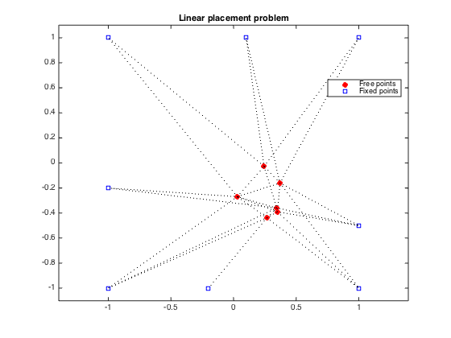
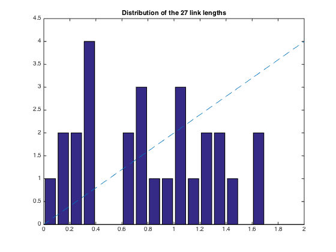

% Section 8.7.3, Boyd & Vandenberghe "Convex Optimization" % Original by Lieven Vandenberghe % Adapted for CVX by Joelle Skaf - 10/24/05 % (a figure is generated) % % Placement problem with 6 free points, 8 fixed points and 27 links. % The coordinates of the free points minimize the sum of the Euclidean % lengths of the links, i.e. % minimize sum_{i<j) h(||x_i - x_j||) % where h(z) = z. linewidth = 1; % in points; width of dotted lines markersize = 5; % in points; marker size % Input Data fixed = [ 1 1 -1 -1 1 -1 -0.2 0.1; % coordinates of fixed points 1 -1 -1 1 -0.5 -0.2 -1 1]'; M = size(fixed,1); % number of fixed points N = 6; % number of free points % first N columns of A correspond to free points, % last M columns correspond to fixed points A = [ 1 0 0 -1 0 0 0 0 0 0 0 0 0 0 1 0 -1 0 0 0 0 0 0 0 0 0 0 0 1 0 0 0 -1 0 0 0 0 0 0 0 0 0 1 0 0 0 0 0 -1 0 0 0 0 0 0 0 1 0 0 0 0 0 0 -1 0 0 0 0 0 0 1 0 0 0 0 0 0 0 0 0 -1 0 0 0 1 0 0 0 0 0 0 0 0 0 0 0 0 -1 0 1 -1 0 0 0 0 0 0 0 0 0 0 0 0 1 0 -1 0 0 0 0 0 0 0 0 0 0 0 1 0 0 0 -1 0 0 0 0 0 0 0 0 0 1 0 0 0 0 0 -1 0 0 0 0 0 0 0 1 0 0 0 0 0 0 -1 0 0 0 0 0 0 1 0 0 0 0 0 0 0 0 0 0 -1 0 0 0 1 -1 0 0 0 0 0 0 0 0 0 0 0 0 1 0 0 0 0 -1 0 0 0 0 0 0 0 0 1 0 0 0 0 0 0 0 -1 0 0 0 0 0 0 1 -1 0 0 0 0 0 0 0 0 0 0 0 0 1 0 0 0 0 -1 0 0 0 0 0 0 0 0 1 0 0 0 0 0 -1 0 0 0 0 0 0 0 1 0 0 0 0 0 0 0 -1 0 0 0 0 0 1 0 -1 0 0 0 0 0 -1 0 0 % error in data!!! 0 0 0 0 1 -1 0 0 0 0 0 0 0 0 0 0 0 0 1 0 -1 0 0 0 0 0 0 0 0 0 0 0 1 0 0 0 0 -1 0 0 0 0 0 0 0 0 1 0 0 0 0 0 0 0 0 -1 0 0 0 0 0 1 0 0 -1 0 0 0 0 0 0 0 0 0 0 1 0 0 0 0 -1 0 0 0 ]; nolinks = size(A,1); % number of links fprintf(1,'Computing the optimal locations of the 6 free points...'); cvx_begin variable x(N+M,2) minimize ( sum(norms( A*x,2,2 ))) x(N+[1:M],:) == fixed; cvx_end fprintf(1,'Done! \n'); % Plots free_sum = x(1:N,:); figure(1); dots = plot(free_sum(:,1), free_sum(:,2), 'or', fixed(:,1), fixed(:,2), 'bs'); set(dots(1),'MarkerFaceColor','red'); hold on legend('Free points','Fixed points','Location','Best'); for i=1:nolinks ind = find(A(i,:)); line2 = plot(x(ind,1), x(ind,2), ':k'); hold on set(line2,'LineWidth',linewidth); end axis([-1.1 1.1 -1.1 1.1]) ; axis equal; title('Linear placement problem'); % print -deps placement-lin.eps figure(2) all = [free_sum; fixed]; bins = 0.05:0.1:1.95; lengths = sqrt(sum((A*all).^2')'); [N2,hist2] = hist(lengths,bins); bar(hist2,N2); hold on; xx = linspace(0,2,1000); yy = 2*xx; plot(xx,yy,'--'); axis([0 2 0 4.5]); hold on plot([0 2], [0 0 ], 'k-'); title('Distribution of the 27 link lengths'); % print -deps placement-lin-hist.eps
Computing the optimal locations of the 6 free points...
Calling SDPT3 4.0: 81 variables, 39 equality constraints
For improved efficiency, SDPT3 is solving the dual problem.
------------------------------------------------------------
num. of constraints = 39
dim. of socp var = 81, num. of socp blk = 27
*******************************************************************
SDPT3: Infeasible path-following algorithms
*******************************************************************
version predcorr gam expon scale_data
NT 1 0.000 1 0
it pstep dstep pinfeas dinfeas gap prim-obj dual-obj cputime
-------------------------------------------------------------------
0|0.000|0.000|6.1e-01|5.3e+00|3.5e+02| 0.000000e+00 0.000000e+00| 0:0:00| chol 1 1
1|1.000|1.000|1.8e-07|6.9e-02|3.4e+01|-5.488302e+00 -3.698254e+01| 0:0:00| chol 1 1
2|0.878|0.843|5.9e-08|1.7e-02|5.9e+00|-1.878956e+01 -2.406167e+01| 0:0:00| chol 1 1
3|0.871|0.921|1.1e-07|2.0e-03|7.6e-01|-2.146265e+01 -2.215096e+01| 0:0:00| chol 1 1
4|0.857|0.921|2.2e-07|2.2e-04|1.5e-01|-2.181197e+01 -2.195382e+01| 0:0:00| chol 1 1
5|0.887|0.955|3.6e-08|1.7e-05|2.5e-02|-2.189172e+01 -2.191595e+01| 0:0:00| chol 1 1
6|0.883|1.000|9.2e-09|7.0e-07|3.3e-03|-2.190574e+01 -2.190899e+01| 0:0:00| chol 1 1
7|0.940|0.969|4.1e-09|2.3e-08|1.8e-04|-2.190811e+01 -2.190829e+01| 0:0:00| chol 1 1
8|0.872|0.867|8.7e-10|3.9e-09|2.4e-05|-2.190825e+01 -2.190827e+01| 0:0:00| chol 1 1
9|0.935|1.000|1.3e-10|1.7e-10|3.9e-06|-2.190826e+01 -2.190827e+01| 0:0:00| chol 2 2
10|0.967|1.000|4.1e-12|2.6e-11|1.9e-07|-2.190826e+01 -2.190826e+01| 0:0:00|
stop: max(relative gap, infeasibilities) < 1.49e-08
-------------------------------------------------------------------
number of iterations = 10
primal objective value = -2.19082636e+01
dual objective value = -2.19082638e+01
gap := trace(XZ) = 1.89e-07
relative gap = 4.23e-09
actual relative gap = 4.20e-09
rel. primal infeas (scaled problem) = 4.06e-12
rel. dual " " " = 2.64e-11
rel. primal infeas (unscaled problem) = 0.00e+00
rel. dual " " " = 0.00e+00
norm(X), norm(y), norm(Z) = 7.3e+00, 5.2e+00, 6.9e+00
norm(A), norm(b), norm(C) = 1.1e+01, 6.2e+00, 7.5e+00
Total CPU time (secs) = 0.10
CPU time per iteration = 0.01
termination code = 0
DIMACS: 1.3e-11 0.0e+00 6.6e-11 0.0e+00 4.2e-09 4.2e-09
-------------------------------------------------------------------
------------------------------------------------------------
Status: Solved
Optimal value (cvx_optval): +21.9083
Done!
 